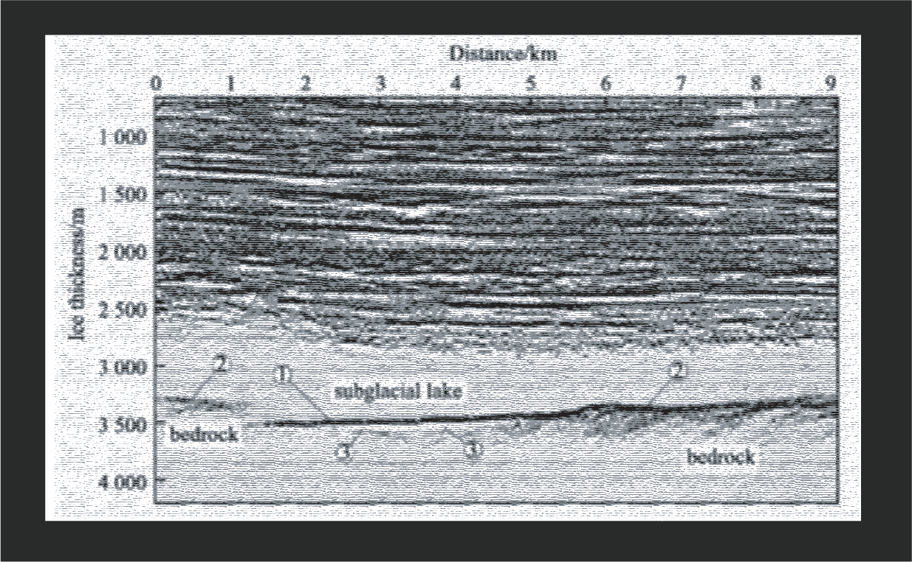
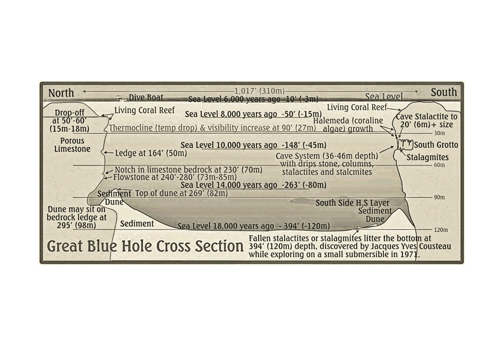
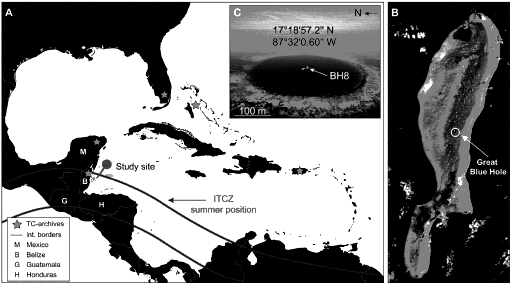
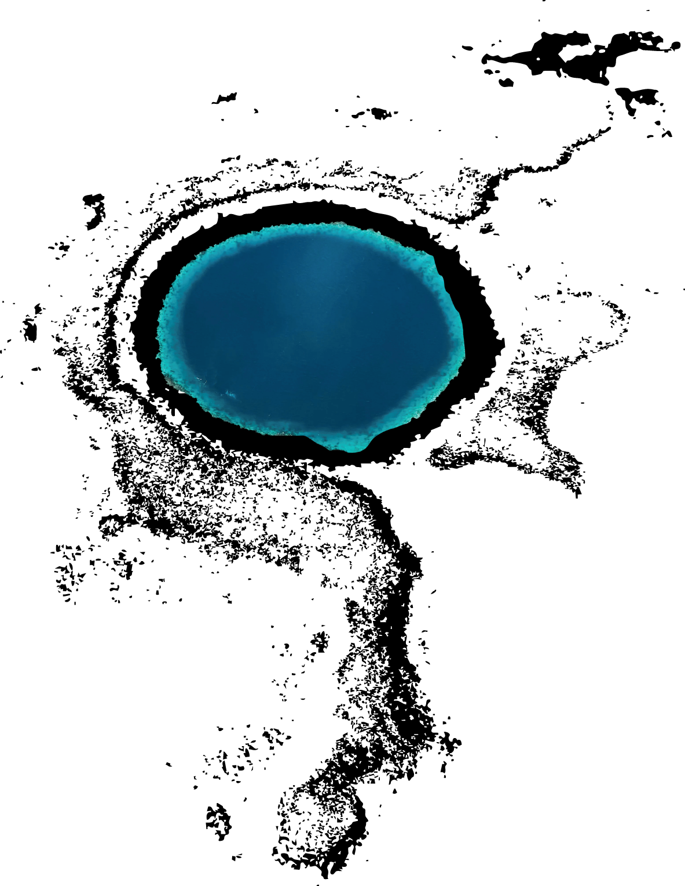
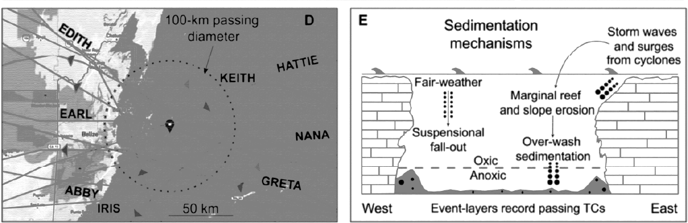
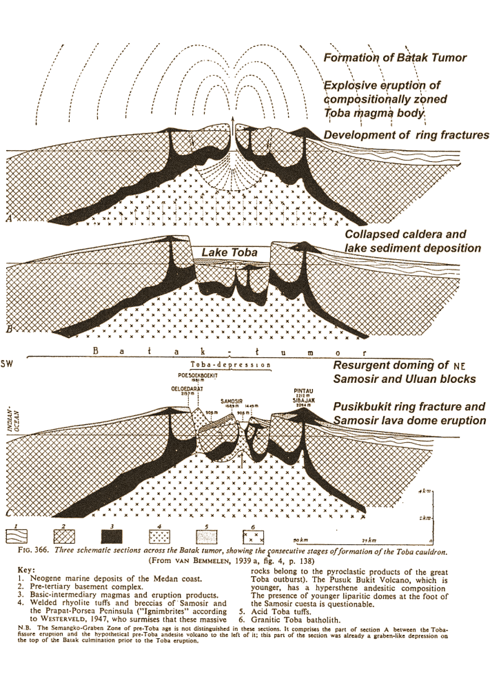

Some stories win trust because the page looks certain: neat diagrams, steady captions and an expert voice that sounds as if it has already arrived.
This counter‑narrative borrows that surface and keeps the entrances, but it changes what an entrance is for. Instead of opening into a finished world
beneath our feet, each entrance opens onto how we know, where we stop, and why we take care. We reuse the persuasive habits that once sold hollow‑Earth
visions — clarity, brevity, calm captions — yet turn them toward honesty. We show seams. We mark what is inferred. We leave blanks on purpose.
The awe stays. The closure doesn’t.
Lake Vostok (Antarctica)
Plate 01 · 78°28′S 106°48′E
Radio‑echo returns from ice reveal a soft band rather than a picture. We follow that band precisely and treat it as an image; we resist the urge to invent a perfect cavity. Nothing beyond the wave return is shown.
Plans and sections are paired. A whole cross‑section would mislead: only the traversed band is drawn. Each measurement names its instrument and method; blanks remain blank, no shading is added.

Figure 1a. Radar‑echo profile across Lake Vostok. Clean‑access constraints noted.Figure 1b. Composite: satellite radar return, reconstruction and thickness chart.
Method
Radio‑echo sounding section; compiled topographic inference with no added shading.
Notes
The soft band is preserved; nothing is invented. Only measured bands are drawn.
Provenance
Instrument: RES • Campaign: multi‑year • Processing: stitched
Marginalia
Keep the band as a band; name limits and stop there.
Mariana Trench (Western Pacific)
Plate 02 · 11°21′N 142°12′E
Ship tracks form the backbone of ocean floor knowledge. Satellite altimetry fills gaps, but interpolation hides as much as it reveals. This plate keeps only the measured tracklines and names the interpolations plainly.
We resist the urge to fill the unmeasured seafloor. We record how deep the deepest soundings go without proclaiming final depths. Coverage is incomplete — by design.
Multibeam bathymetry; stitched survey tracklines without invented bathymetry between tracks.
Notes
Interpolation is flagged; no pretence of continuous certainty.
Provenance
Datasets: compiled cruises • Years: various • Resolution: varied
Marginalia
Coverage incomplete — by design.
Sơn Đoòng (Vietnam)
Plate 03 · 17°27′N 106°17′E
The largest cave on Earth was discovered by a local man but mapped decades later by scientists. Plans and sections show only what is surveyed; dotted lines indicate unknown passages. Protected zones remain blank.
From above, the formation reads as a near perfect circle. From within, it reads as a profile through water and time. A vertical CTD cast bends at the halocline, where layers meet; below, oxygen falls toward quiet, anoxic water that preserves fine laminations.
A coring campaign turns those laminations into an archive of events across centuries and millennia. Earlier pages loved the smooth authority of graphs while treating them as proof of hidden realms. We keep the graph and say what it can and cannot say: one day’s profile is one day’s truth; seasons shift; instruments differ.

Figure 4a. Schematic cross‑section through the Great Blue Hole; oxygen minimum and core archive indicated.

Figure 4b. Regional context showing the Intertropical Convergence Zone (ITCZ) and Lighthouse Reef bathymetry.

Figure 4c. Aerial view of the Great Blue Hole, Lighthouse Reef. Perfect circular formation marks collapsed karst cavern, now marine sinkhole.

Figure 4d. Sedimentation mechanisms: fair‑weather suspension fallout creates fine laminations; storm events deposit coarse overwash layers. Anoxic conditions preserve event‑layer record.
Table 4.1: Water Column Structure
Depth (m)
Temperature (°C)
Salinity (PSU)
O₂ (mg/L)
0–30
28.5
35.2
6.8
30–90
27.0
35.5
5.2
90–100
25.5
36.8
2.1
100–125
24.0
37.2
0.0
Method
CTD vertical casts and core analyses; lamination counts with explicit note of depth/time ranges.
Notes
One day’s profile is one day’s truth; seasons shift; instruments differ.
Some thresholds belong to minutes; this one belongs to deep time. A caldera lake holds a layered record of eruption and recovery. On paper, a basin plan can sit beside a stratigraphy panel, with cores aligned and tephra bands marked.
The effect can look final, as if the past were settled. We mark the unsettled parts: ages are modelled and refined; correlations carry uncertainty; intervals are shaded to show doubt honestly. This entrance opens into time itself, where a calm surface floats over a memory written in ash and silt.
Figure 5a. Side profile showing ring faults and collapse zones indicated.

Figure 5b. Three schematic sections showing consecutive stages of Toba caldera formation. Note Batak Tumor development and ring fracture systems.Figure 5c. Shaded relief map of Toba caldera with resurgent domes marked. Orange/yellow boundaries indicate calderas from different eruption phases.
Method
Basin profile and velocity anomaly cross‑section; stratigraphy panel aligned with core correlations and tephra bands.
Hollow‑Earth stories learned to look convincing: cross‑sections that felt exact, portraits with diagrams, captions that sounded conclusive. This counter‑narrative keeps the look but changes the promise. Each plate uses the same gentle tools — clear images with captions, small claims, a steady tone — to expose how belief is built and to replace its appeal with something truer and more durable. We keep portals because portals are human; we redirect them toward method and limit. We show a signal and refuse to stage a scene. We show a seam and let the stitch be seen. We show a blank and admit that leaving it blank can be the most honest mark.